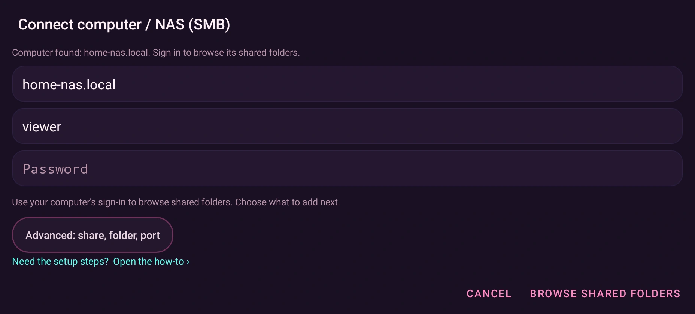

Shared folders · SMB
Mac, Windows or NAS
Enable SMB sharing on the computer or NAS first, then connect from Finally.
Set up sharing on a Mac
- Open System Settings → General → Sharing. Open the information button beside File Sharing and turn it on.
- Add your video folder under Shared Folders. Give the account you’ll use at least Read Only access.
- Open Options. Enable Share files and folders using SMB and enable your account under Windows File Sharing.
- Note the Mac’s SMB address shown below File Sharing: On.
Set up Windows or a NAS
Share the video folder over SMB and give your chosen user permission to read it. Note the server address and that user’s login.
Follow the Windows SMB guide or Synology guide for the server-side steps.
- In SOURCES, select the computer or NAS with the SMB label. If it’s missing, choose ADD CONNECTION → Add manually → NAS / SMB share.
- Check the server’s address (already filled for a discovered device), then enter your username and password. Use the account that has access to your shared folder.
- Choose Browse shared folders, open your share or a subfolder, and choose Select this folder. Choose Add & browse to save it and open the folder.
- Address
home-nas.local— example only; enter your server- Username
- The Mac, Windows or NAS account with folder access
- Password
- That account’s password
Leave Advanced settings closed unless you already know you need a specific share, subfolder, domain or port.

